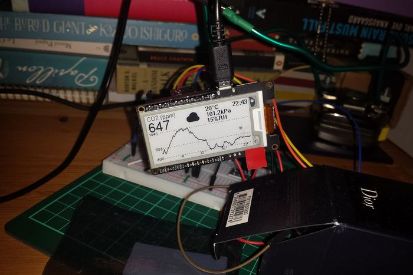
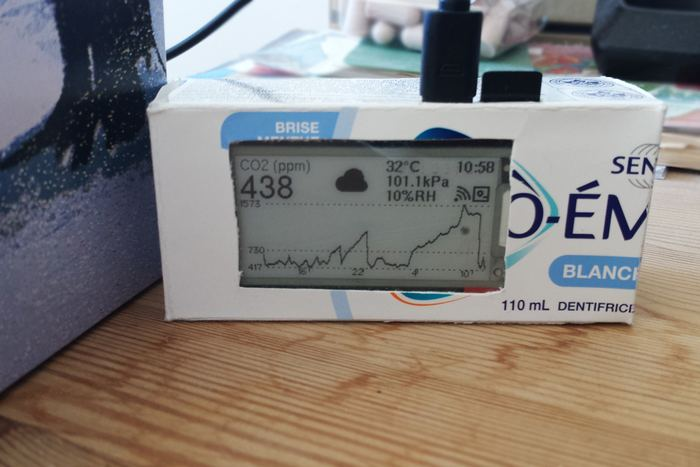
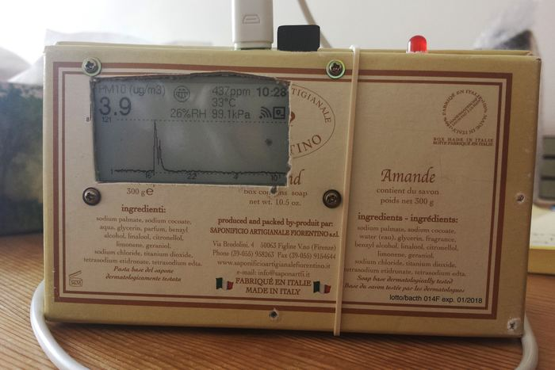
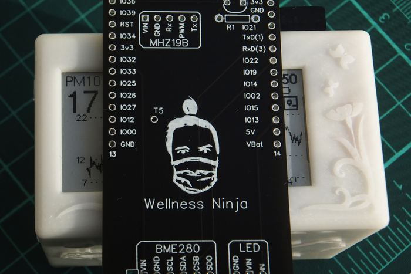
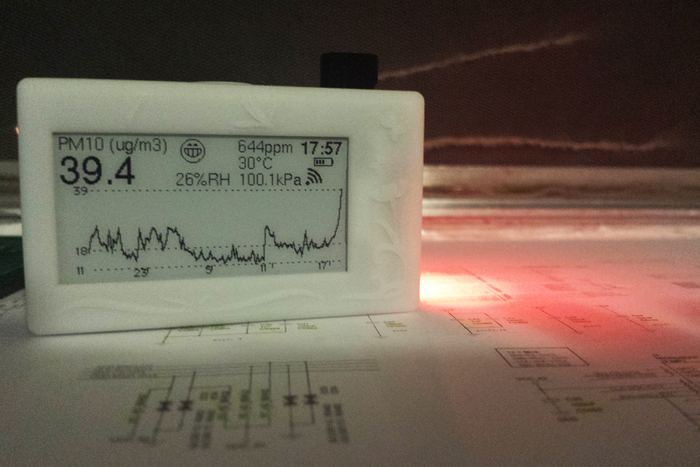
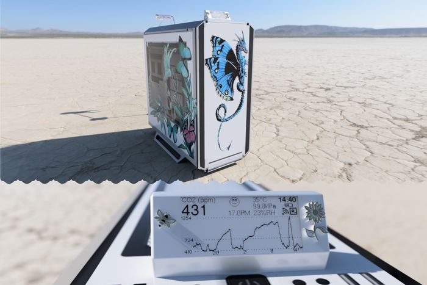
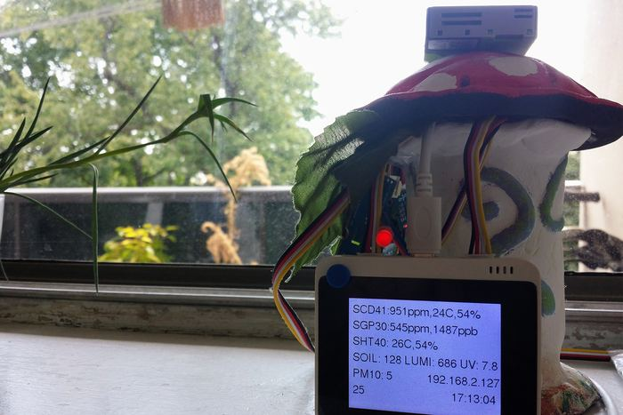
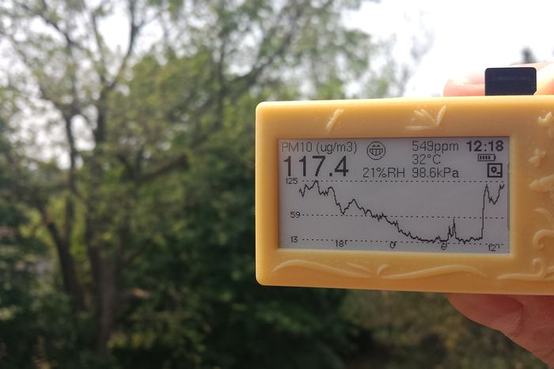
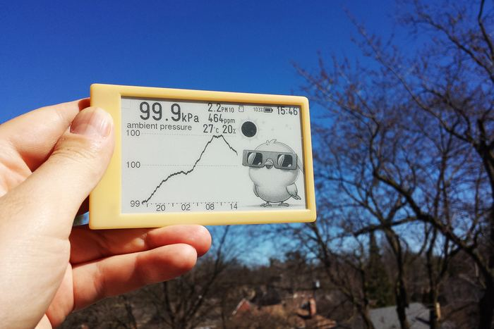

2019 to today
It started in half a
toothpaste box.
Canary was not designed in one go. It was nine prototypes over five years, each one answering a question the last one raised. Here they are, in order, with the dates they were built.
-

2019-FEB-20
J’adore
An MHZ19-B, a sensor designed to monitor CO2 in hospital operating theatres, connected to my PC over serial. Data logged with PowerShell. A screen came later.
-

2019-MAR-07
Fresh
Added an ambient pressure sensor and logging to a microSD card. Everything ran from USB at 5V, housed inside half a toothpaste box.
-

2019-JUN-02
Nutty
Added a PMS5003 particulate sensor with a red LED to warn above 10 PM2.5. Now running from a rechargeable LiPo, so it could leave the desk.
-

2020-JUL-06
Wellness Ninja
A maximum miniaturisation test, enclosed in a custom resin case. Added a bright RGB LED, a capacitive touch button and an ambient luminosity sensor.
-

2020-NOV-07
Wildfires
I realised what it could be. Recording a full day of smoke drifting over Toronto showed a phenomenon completely unlike barbecues and cigarettes: it arrives slowly, stays for hours, and does not clear when you close a window.
-

2022-JAN-30
Blue Dragon
I proposed a personal wellness companion built directly into a PC. Intel® liked the idea enough to send the materials and the funding to build it, and it went on to win their PC Mod Level-Up Challenge.
See the winning entry -

2022-SEP-26
Cyber Gnome
To stress test new sensors and gauge public reaction, I turned it into an open science project and entered a contest, winning a publication in the organiser’s magazine.
See the build guide -

2023-JUN-07
Toronto’s Burning
I recorded very elevated particle levels from my home in Willowdale and warned anyone who would listen. The local news was slow to advise against jogging; the device was not.
And again in 2025 -

2024-APR-07
Solar Eclipse
On totality’s eve I was hunting for rising pressure. The next day in Hamilton everyone was panicking about cloud cover, while my Canary showed the clouds would part in time.
The founding batch
The tenth one is the one you can buy.
Everything above led to the unit shipping this year. Join the waitlist and we will tell you once, when it opens.